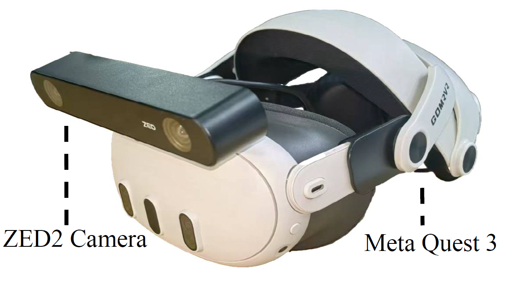

MotionTrans: Human VR Data Enable Motion-Level Learning for Robotic Manipulation Policies
Teaser
Abstract
Scaling real robot data is a key bottleneck in imitation learning, leading to the use of auxiliary data for policy training. While other aspects of robotic manipulation such as image or language understanding may be learned from internet-based datasets, acquiring motion knowledge remains challenging. Human data, with its rich diversity of manipulation behaviors, offers a valuable resource for this purpose. While previous works show that using human data can bring benefits, such as improving robustness and training efficiency, it remains unclear whether it can realize its greatest advantage: enabling robot policies to directly learn new motions for task completion. In this paper, we systematically explore this potential through multi-task human-robot cotraining. We introduce MotionTrans, a framework that includes a data collection system, a human data transformation pipeline, and a weighted cotraining strategy. By cotraining 30 human-robot tasks simultaneously, we direcly transfer more than 10 motions from human data to deployable end-to-end robot policies. Notably, 9 tasks achieve non-trivial success rates in zero-shot manner. MotionTrans also significantly enhances pretraining-finetuning performance (+40% success rate). Through ablation study, we also identify key factors for successful motion learning: cotraining with robot data. These findings unlock the potential of motion-level learning from human data, offering insights into its effective use for training robotic manipulation policies. All data, code, and model weights will be open-sourced.
Collecting Human and Robot Demonstrations
Hardware System: VR-based Human Data Capture + Single-arm Robot Platform
We synchronize VR headset/controllers and multi-view cameras to capture 3D hand trajectories, egocentric video, and robot state with precise time alignment.
Data Collection Demo
During collection we log hand keypoints, egocentric observations, and textual annotations under a unified clock, making downstream alignment and training straightforward.
MotionTrans Dataset at a Glance
We collected 3,213 demonstrations across 15 human tasks and 15 robot tasks in 10+ real-world scenes. Tasks are grouped by motion-similar skill categories to support cross-embodiment (Human→Robot) co-training and transfer.
Human Tasks
Unplug the white charger
Drop bread to the green bucket
Press the stapler
Put orange to the green bucket
Wipe blue towel on the table and push it to the bulky bottle
Close silver laptop
Put mango to pink bowl while avoiding obstacle by bypassing
Put mango to the pink bowl while avoiding obstacle by lifting
Press red dice to make it rotation
Put banana to the white plate
Pour bottle to the pink bowl
Put toy bear to the black box
First open the white cap style box then put toy panda to the box
Fold the blue towel
Pour milk bottle to the yellow pan
Robot Tasks
Push orange cube to the bulky bottle
Put toy panda to the box
Put bread to the red pad
Open the white cap style box
Drop black bottle to purple bucket
Pour cola to the red cup
Move red dice to the bulky bottle
Flip down the black bottle
Press the pink mouse
Put bread to the high black platform
Put Capybara to the purple pad
Put chilli to the white plate
Wipe blue towel on the table and push it left or right to the pink bowl
Put mango to the pink bowl
Put cucumber to purple bucket
Unified Human-Centric State-Action Space
We proposed MotionTrans framework, a pipeline for transforming human data into robot format, and a weighted human-robot multi-task cotraining strategy.

Robot Observations
Human Observations
Human-Humanoid Co-training Improves Generalizabilty
Few-shot Cross-Humanoid Generalization (THU Franka)
20 CMU demos
Co-trained with human data
Object Generalization (THU Franka)
Seen in robot data: blue pepsi bottle
Seen in human data: red coke can
Seen in human data
Seen in human data
Object Placement Generalization THU Franka
Baseline: Trained on 20 robot demos
Ours: co-trained with human data with diverse placements
Background Generalization (UCSD H1)
Seen in robot data
Seen in human data
Seen in human data: wooden table
Seen in human data: green cardboard
BibTeX
@article{qiu2025-humanpolicy,
title={Humanoid Policy \~{} Human Policy},
author={Ri-Zhao Qiu and Shiqi Yang and Xuxin Cheng and Chaitanya Chawla and Jialong Li and Tairan He and Ge Yan and David J. Yoon and Ryan Hoque and Lars Paulsen and Ge Yang and Jian Zhang and Sha Yi and Guanya Shi and Xiaolong Wang},
journal={arXiv preprint arXiv:2503.13441},
year={2025}
}